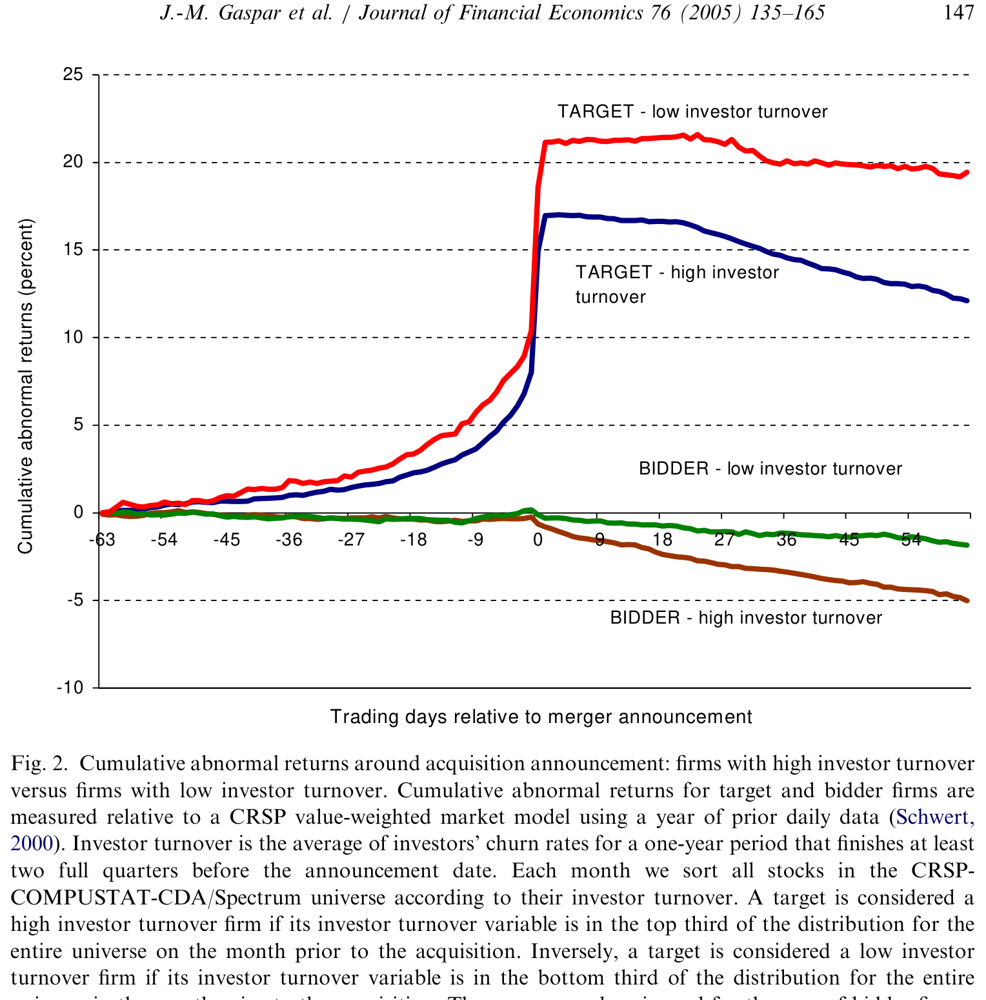
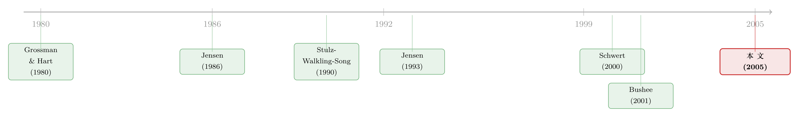

你的股东「等不及」，并购方就敢压价
本文读的是 Gaspar, Massa & Matos (2005, Journal of Financial Economics)：一家公司若被「短期」机构股东持有，它更容易收到收购要约，却只能拿到更低的溢价——平均持股期每缩短约四个月（一个标准差），目标公司的溢价就少 3% 以上；而由短期股东持有的收购方，并购公告时的市场反应更差，三年后还会以每月 −0.7%、每年约 −8% 的速度跑输。一句话：股东「等不及」，会变成谈判桌上的软肋。
1 一个被忽略的问题：股东「拿得住」吗？
并购的故事，我们通常是从「价格」讲起的。目标公司值多少、协同效应有多大、要约溢价几成——这些都是台面上的数字。但有一个变量，几乎从不出现在台面上：这家公司的股东，到底打算把股票拿多久？
直觉上这似乎无关紧要。在一个完美的资本市场里，公司做什么，股东都可以通过自己调整投资组合来「撤销」——哪怕公司因为被并购而消失了，股东也只是把钱挪到别处。既然如此，谁持有这家公司、持有人是「长情」还是「善变」，都不该影响公司的命运。这正是本文要打的那个零假设 (null hypothesis)：股东的投资期限在公司控制权市场上不起作用。
但你只要在现实里多看一眼，就会觉得这个零假设可疑。养老金的固定缴款计划天然偏长期，而零售开放式基金因为申赎频繁、被资金流推着走，天然偏短期（Edelen, 1999）。委托代理本身也会缩短期限：基金经理可能因为筹不到长期资本而被迫做短（Shleifer and Vishny, 1997），也可能因为要不断向外界证明自己的能力而追逐短期信号（Scharfstein and Stein, 1990）。同一家公司，落在不同期限的股东手里，会不会就此走上不同的命运？
这篇论文的全部张力，就压在这一个问题上。
2 两条暗线：监督与谈判
作者把「投资期限如何影响并购结局」拆成了两条相互缠绕的机制。理解这两条线，整篇文章就通了。
第一条线是监督 (monitoring)。 短期股东监督管理层的动机更弱——道理很朴素：他们很可能在监督的好处兑现之前就已经离场了，凭什么花成本去盯着管理层？而且他们持股时间太短，根本来不及「了解」这家公司。监督一旦松懈，管理层就有了用股东利益换取私人利益的空间：对目标公司是保住饭碗、对收购方是建立商业帝国 (empire building)。
第二条线是谈判力 (bargaining power)。 这条线更精巧，它直接接到了 Grossman and Hart (1980) 的搭便车问题 (free-rider problem) 上。在一桩要约收购里，长期股东会「持币待涨」——除非要约价已经包含了并购带来的全部改善，否则他们不肯交出股票（这就是 hold out）。短期股东不行，他们大概率会在所有好处兑现之前就把股票卖了。于是，持有短期股东的目标，天生就比持有长期股东的目标缺一口气，在谈判桌上「耗不起」。在友好合并里也一样：股东随时可能「用脚投票」（the Wall Street walk），管理层的议价底气就弱。
把两条线叠在一起，预测就出来了，而且方向高度一致：
对目标而言，股东越短期 → 收到要约的概率越高，但拿到的溢价越低。 对收购方而言，股东越短期 → 发起收购的概率越高，但公告期的异常收益越负、长期表现越差。
注意一个反直觉之处：监督弱、谈判力差，本该是「坏事」，可它带来的并不是「不被收购」，而是「更容易、更便宜地被收购」。短期股东不是把门关上，而是把门票打了折。这正是 Jensen (1993) 所说的那个权衡：短期持股结构让收购变得「更划算」，对目标股东是损失，对整个控制权市场却是一种润滑。
作者还顺手给出了一个交叉效应 (cross-effects) 的预测：谈判桌上一方的收益，应该与另一方股东的期限挂钩。如果收购方股东短期，收购方容易overpay，好处流向目标；如果目标股东短期，好处流向收购方。一句话——一方股东越短期，越多的价值应该流向对方。
3 识别的关键：怎么把「投资期限」量出来？
讲到这里，一个自然的问题是：投资期限看不见摸不着，怎么测？这恰恰是本文最见功力的一步，也是它区别于以往「机构持股水平」研究的地方——以往的文献（如 Stulz et al., 1990; Ambrose and Megginson, 1992）问的是「机构持股多少」，本文问的是「机构持股多久」。
作者的思路很干脆：短期投资者应该频繁买卖，长期投资者应该长期不动。 于是先给每个机构投资者算一个换手率 (churn rate)——衡量他在自己整个组合所有股票上轮换持仓的频繁程度。数据来自 CDA/Spectrum，即机构向 SEC 报送的季度 13-F 持仓（Gompers and Metrick, 2001）。
换手率的定义（论文式 (1)）如下。这是全文的「心脏」，值得逐项看清楚：
这个构造的妙处在于分子里那一项 a3：它把单纯由股价涨跌带来的市值变化剔除掉，留下的才是投资者主动调仓的部分。所以换手率刻画的是「主动交易的频繁程度」，而不是「股价波动」。按构造，换手率取值落在 [0, 2] 区间（Carhart, 1997; Barber and Odean, 2000）。
有了每个投资者的换手率，再加权到公司层面，就得到本文的主角变量——公司 k 的投资者换手率 (investor turnover)，即其股东组合换手率在四个季度上的加权平均（论文式 (2)）：
$$ \text{Investor turnover of firm } k \;=\; \sum_{i\in S} w_{k,i,t}\left(\frac{1}{4}\sum_{r=1}^{4} CR_{i,t-r+1}\right) $$
其中 w_{k,i,t} 是投资者 i 在公司机构持股中的权重，S 是公司 k 的股东集合。换手率高 = 股东短期，换手率低 = 股东长期。
这里有一个识别上的精心安排，值得专门点出：换手率是在并购公告前 6 到 9 个月就测好的，且用的是再往前推一整年的持仓历史——也就是说，构造这个变量所用的信息，其实早在事件发生前 18 到 21 个月。这样做有三重好处：(i) 时间上远早于 run-up 期，避开了并购传闻提前泄露的污染（Schwert, 2000）；(ii) 用全组合而非单只股票的换手率，避免「这家公司因为快被并购了、成交量放大」反过来污染测度；(iii) 把它当作相对于事件预先决定 (predetermined) 的变量来用。作者还做了未报告的检验，参照 Pinkowitz (1999) 看机构在公告前有没有「抢跑布局」，结论是没有显著的预先建仓。
顺带一个有意思的标定：样本里换手率的中位数是 39%，意味着大约 80% 的仓位会在一年里被换掉，折算下来，中位投资者持有一只股票的平均时长大约是 12 / 0.8 = 15 个月。后文「缩短四个月」的冲击，参照系就是这 15 个月。
4 数据与样本
- 并购事件：
SDC数据库，1980 年 1 月至 1999 年 12 月、标的为美国公司的全部收购公告。要求目标在 NYSE/Amex/Nasdaq 上市、CUSIP 能匹配CRSP、且结局已知（完成或撤回）。剔除极端异常值与标的市值占比不足 1% 的交易；同一目标一年内有多次出价时只保留第一次（否则修订/竞争性报价会人为制造出「短期股东↔低异常收益」的伪相关）。最终基础样本为3,814个事件。 - 会计/股价/机构持仓：分别来自
COMPUSTAT、CRSP、CDA/Spectrum。 - 溢价的两把尺子：主分析用 Schwert (2000) 的异常收益溢价 (abnormal return premium)，即目标股票在公告日
[−63, +126]交易日窗口的累计异常收益（相对市场模型）；但这把尺子混入了「交易能否成交」的概率，于是作者再补一把实际要约溢价 (actual offer premium)，定义为(收购方出价 / 目标公告前股权市值) − 1，按 Officer (2003) 的方法构造。全样本里，前者均值约21.5%，后者约52.7%。
样本的整体特征与 Andrade et al. (2001)、Schwert (2000) 等近期研究一致：1990 年代并购数量大增、敌意比例大幅下降、更多同行业与换股交易。
5 主要结果：短期股东，三处「现形」
第一，目标溢价。 核心发现一句话——目标股东越短期，溢价越低。量级上，投资者换手率上升一个标准差（也就是平均持股期从 15 个月缩短到约 11 个月、差了仅仅四个月），目标溢价就下降 3% 以上。这个效应稳健且在经济上不可忽视。

Figure 2: suggests that target firms with high investor turnover exhibit lower
第二，要约概率。 投资者期限不只影响价格，也影响「会不会发生」。短期股东提高了一桩交易达成的概率——他们「成全」了这笔买卖。但正因为期限同时影响概率和溢价，就出现了样本选择的隐忧：我们观察到溢价的样本，本身是「被选出来成交」的那一批。作者用 Heckman (1979) 的两步法处理这一样本选择偏差 (sample-selection bias)，结果是：即便properly校正之后，换手率变量解释溢价的统计显著性依然存在。
第三，收购方。 对收购方而言，并购更像是代理问题的暴露（Jensen, 1986 的自由现金流、Roll, 1986 的傲慢假说）。结果与预测一致：收购方股东越短期，公告期的收购方异常收益越负。更进一步，作者追问长期表现——并购前由短期股东持有的收购方，在随后三年的持有期里，相对长期股东持有的收购方，以高达每月 −0.7%（约每年 −8%）的幅度跑输。这意味着短期股东给了管理层更大的余地去overbid、去做价值毁损型并购。
把三处放在一起，本文的核心论点就立住了：被短期投资者持有的公司，在收购中议价地位更弱。监督弱使管理层得以为私利（目标的饭碗、收购方的帝国）牺牲股东回报，谈判力弱使他们在桌上「耗不起」。两者叠加，正是 Jensen (1993) 所刻画的那个权衡的实证版本。
6 文献脉络
把这篇论文放回它所在的那条河流里，脉络会清晰很多。
源头有两支。一支是谈判与控制权：Grossman and Hart (1980) 的搭便车问题奠定了「为什么股东不肯轻易交出股票」的微观基础——本文几乎是把这个框架按「投资期限」重新切了一刀。另一支是代理与并购：Jensen (1986) 的自由现金流理论、Roll (1986) 的傲慢假说，解释了收购方管理层为何会做对自己有利、对股东不利的并购；Jensen (1993) 则把视野拉到整个控制权市场的「内部控制失灵」。（关于自由现金流这条线，可参见《现金为什么一定要「还」出去？——四十年后，重读 Jensen 的自由现金流》。）

中游是股东异质性：Shleifer (1986)、Bagwell (1991) 指出「谁持有」会影响股价；在并购语境里，Stulz, Walkling and Song (1990) 发现更高的机构持股伴随更低的收购溢价，Ambrose and Megginson (1992) 则没找到持股水平对要约概率的显著影响。到了 Bushee (2001)，机构投资者被进一步按行为分类——transient（高换手、高分散）投资者会过度看重近期盈利。
本文正是站在这个交叉口上：它没有再去问「机构持股多少」，而是用换手率把「持股多久」量化出来，第一次把投资期限这个维度系统地接进了控制权市场。它对溢价测度的处理，则直接承袭 Schwert (2000) 与 Officer (2003)；对目标 CEO 私利的讨论，呼应 Hartzell, Ofek and Yermack (2004)。（股东话语权如何反向影响并购溢价，可对照《权力天平倒过来那一年》；目标 CEO 在谈判中为自己「加薪」的证据，可参见《最后一分钟的两百万股期权》。）
7 评论与延伸（Q&A + 研究方向）
(a) 几个可能的疑问
Q：换手率测的真是「投资期限」，而不是别的什么吗？
这是最关键的担心。作者的防线有三层：用整个组合的换手率（而非单只股票）剥离掉「这只股票临近并购、成交放量」的反向污染；在事件前 6–9 个月、用更早一年的历史测量，把它当作预先决定变量；并控制持股比例、集中度等其它股东特征。但换手率终究可能与「机构类型、信息能力、流动性需求」纠缠在一起，「期限」只是其中一种解读——这是最值得后续工作去拆的地方。
Q：短期股东带来「更容易被收购 + 更低溢价」，这难道不矛盾吗？
不矛盾，反而是本文的精髓。监督弱、谈判力差，并不会让公司「免于」被收购，而是让收购对买方更便宜、更划算，于是要约来得更勤、价压得更低。门没关上，只是门票打了折——这正是 Jensen (1993) 权衡的两面。
Q：异常收益溢价会不会只是反映「成交概率」，而非真实出价？
会，作者也承认这把尺子混入了成交概率。所以他们另用 Officer (2003) 的实际要约溢价（出价/公告前市值 − 1）来交叉验证，两套测度结论一致，削弱了「只是概率假象」的担忧。
Q：既然投资期限同时影响『是否成交』和『溢价』，溢价回归不会有样本选择偏差吗？
正是这个问题逼出了文中的 Heckman (1979) 两步校正。结论是：即便把「被选中成交」这层筛选显式建模并校正后，换手率对溢价仍有显著解释力，不是纯粹的选择假象。
Q：收购方三年跑输 8%/年，会不会只是「长期异常收益」方法本身不可靠？
这是并购长期表现文献的老问题（Fama, 1998 对此有系统批评）。本文的相对稳健之处在于它做的是横截面比较——短期股东持有的收购方 vs. 长期股东持有的收购方，而非笼统断言「所有收购方都跑输」，这在一定程度上缓解了基准设定的争议，但并未完全免疫。
Q：它和「机构持股水平影响并购」的老结论有何不同？
维度不同。Stulz et al. (1990) 等问的是持股多少，本文问的是持股多久。换手率提供了一个正交于「持股水平」的新信息维度，并且在控制了持股比例、集中度之后依然显著——这正是它的边际贡献。
(b) 几个可能的研究问题与提案
-
把「投资期限」搬到公司债与信用市场。 【经济故事】债券持有人的期限结构同样应影响重组、债务展期与违约谈判中的「耗得起 vs. 耗不起」。短期债券持有人（如部分债券基金）在 distressed exchange 里更可能折价离场，从而压低重组对价——这是本文谈判力逻辑在债权人侧的镜像。 【可行性】中。换手率的构造可移植到
eMAXX/保险公司债券持仓或债券基金持仓数据；识别上可借并购、要约回购或重组事件做横截面比较，但债券持仓频率与覆盖度不如 13-F，是主要障碍。 -
外资持有人是「短期」还是「长期」，如何改变收购结局？ 【经济故事】跨境机构往往因汇率对冲、再平衡和回流压力而表现出更高换手；若外资占比高的目标确实议价更弱，则「外资 = 短期 = 低溢价」会是一条清晰的政策含义。 【可行性】中。可用
FactSet/13-F区分本土与外资机构、构造各自换手率，在跨国并购样本上检验；难点是把「外资」与「短期」这两个高度相关的标签干净地分开。 -
指数化与被动持股上升，是否在系统性地压低并购溢价？ 【经济故事】本文样本止于 1999 年，此后被动资金占比飙升。被动持有人换手极低（看似「长期」），但其监督动机也弱——这与本文「短期=弱监督」的等式正好张力十足：低换手未必等于强监督。 【可行性】高。换手率/被动份额数据齐备，可把样本延展到 2000 年后并加入「被动持股份额」交互项，直接检验「低换手但弱监督」这一反例，identification 相对干净。
-
流动性冲击作为外生的「期限缩短」工具。 【经济故事】若能找到让某些股东被迫缩短期限的外生事件（如基金大额赎回、流动性危机中的强制抛售），就能把「期限→溢价」从相关推进到因果。 【可行性】中。可借鉴基金资金流诱发的抛售 (flow-induced trading) 作为工具变量，在并购样本上做 IV；难点是这类冲击与公司基本面可能并不完全无关。
8 我的判断
这篇论文的贡献干净而锋利：它把一个长期被忽略的维度——股东持有多久——用一个可计算、预先决定、且与持股水平正交的指标（换手率）量化出来，并在控制权市场上同时验证了「目标更易被收购却拿更低溢价、收购方表现更差」这一组方向一致的预测。把 Grossman-Hart 的谈判逻辑和 Jensen 的代理逻辑，统一在「投资期限」这一个支点上，叙事极其完整。
我的保留主要在识别。换手率终究是一个相关性很强的代理变量，「期限」「机构类型」「信息能力」「流动性需求」缠在一起，文中靠控制变量和预先测量来防守，但没有一个真正外生的冲击把「期限」单独打出来——三年长期异常收益那部分尤其依赖于横截面比较是否真的同质。3% 的溢价差和 −0.7%/月 的跑输，量级可信，但因果的最后一公里仍是开放的。
后续我最想看到的，是一个能把「期限」外生化的设计：用基金赎回、被动化、或流动性危机制造的强制换手当工具，去检验「被迫变短期的股东，是否真的让公司在谈判桌上吃了亏」。如果这条因果链能被钉死，本文从 2005 年起埋下的这颗种子，会长成关于「谁持有、持有多久如何塑造公司命运」的一整片森林。
参考文献
- Ambrose, B. W., Megginson, W. L. (1992). The role of asset structure, ownership structure and takeover defenses in determining acquisition likelihood. Journal of Financial and Quantitative Analysis 27(4), 575–589.
- Andrade, G., Mitchell, M., Stafford, E. (2001). New evidence and perspectives on mergers. Journal of Economic Perspectives 15(2), 103–120.
- Bagwell, L. (1991). Shareholder heterogeneity: evidence and implications. American Economic Review 81(2), 218–221.
- Barber, B., Odean, T. (2000). Trading is hazardous to your wealth: the common stock investment performance of individual investors. Journal of Finance 55, 773–806.
- Bushee, B. J. (2001). Do institutional investors prefer near-term earnings over long-run value? Contemporary Accounting Research 18(2), 207–246.
- Carhart, M. (1997). On persistence in mutual fund performance. Journal of Finance 52, 57–82.
- Edelen, R. M. (1999). Investor flows and the assessed performance of open-end mutual funds. Journal of Financial Economics 5, 439–466.
- Fama, E. (1998). Market efficiency, long-term returns, and behavioral finance. Journal of Financial Economics 49, 283–306.
- Gompers, P., Metrick, A. (2001). Institutional investors and equity prices. Quarterly Journal of Economics 116(1), 229–259.
- Grossman, S., Hart, O. (1980). Takeover bids, the free-rider problem, and the theory of the corporation. Bell Journal of Economics 11, 42–64.
- Hartzell, J., Ofek, E., Yermack, D. (2004). What's in it for me? Personal benefits obtained by CEOs whose firms get acquired. Review of Financial Studies 17, 37–61.
- Heckman, J. (1979). Sample selection bias as a specification error. Econometrica 47, 153–161.
- Jensen, M. (1986). Agency costs of free cash flow, corporate finance, and takeovers. American Economic Review 76, 659–665.
- Jensen, M. (1993). The modern industrial revolution, exit, and the failure of internal control systems. Journal of Finance 48(3), 831–880.
- Officer, M. (2003). Termination fees in mergers and acquisitions. Journal of Financial Economics 69, 431–437.
- Roll, R. (1986). The hubris hypothesis of corporate takeovers. Journal of Business 59, 197–216.
- Scharfstein, D. S., Stein, J. C. (1990). Herd behavior and investment. American Economic Review 80(3), 465–479.
- Schwert, G. W. (2000). Hostility in takeovers: in the eyes of the beholder? Journal of Finance 55(6), 2599–2640.
- Shleifer, A. (1986). Do demand curves for stocks slope down? Journal of Finance 41, 579–590.
- Shleifer, A., Vishny, R. (1997). The limits of arbitrage. Journal of Finance 52, 35–55.
- Stulz, R., Walkling, R., Song, M. (1990). The distribution of target ownership and the division of gains in successful takeovers. Journal of Finance 45(3), 817–833.